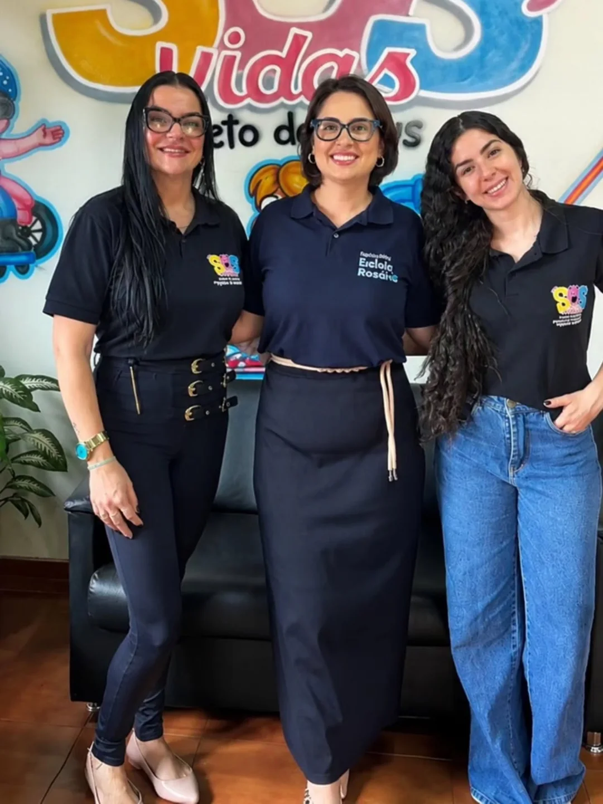

Talita Aparecida Valezzi de Souza
PresidenteFundadora e gestora do projeto, Talita lidera a SOS Vidas com dedicação à causa social há mais de uma década.
Uma instituição construída sobre os pilares do cuidado, da dignidade e do respeito a cada pessoa.
A SOS Vidas é uma instituição sem fins lucrativos sediada na Rua Bolívia, 1296 – Vila Mariana, Ribeirão Preto – SP. Atuamos na garantia de direitos de idosos, pessoas com deficiência e famílias em situação de vulnerabilidade social, com equipe técnica composta por assistente social e psicóloga.
Nosso compromisso é promover inclusão, cuidado e qualidade de vida com ética e sensibilidade social — porque acreditamos que o atendimento humanizado é um direito de todo cidadão, não um privilégio.

Diálogo e parcerias — sede SOS VidasOs fundamentos que guiam cada ação da SOS Vidas.
Garantir o atendimento prioritário a pessoas em situação de vulnerabilidade, especialmente idosos e pessoas com deficiência, assegurando seus direitos conforme a legislação brasileira.
Ser referência em atendimento social em Ribeirão Preto, ampliando o alcance dos nossos programas e fortalecendo os vínculos comunitários.
Profissionais comprometidos com o atendimento humanizado e a transformação social.
Talita Aparecida Valezzi de Souza
PresidenteFundadora e gestora do projeto, Talita lidera a SOS Vidas com dedicação à causa social há mais de uma década.
Fabiana Martins
Assistente SocialProfissional dedicada ao atendimento humanizado, Fabiana acompanha individualmente cada família e caso do projeto.
Maria Clara
PsicólogaResponsável pelo acolhimento emocional e pelas rodas de conversa, promovendo saúde mental e fortalecimento dos laços.
Nossa missão é fundamentada nas principais legislações de proteção social do Brasil:
Cada ação da SOS Vidas é planejada com base nesses marcos legais, garantindo que nossos beneficiários tenham seus direitos fundamentais respeitados e efetivados com dignidade.